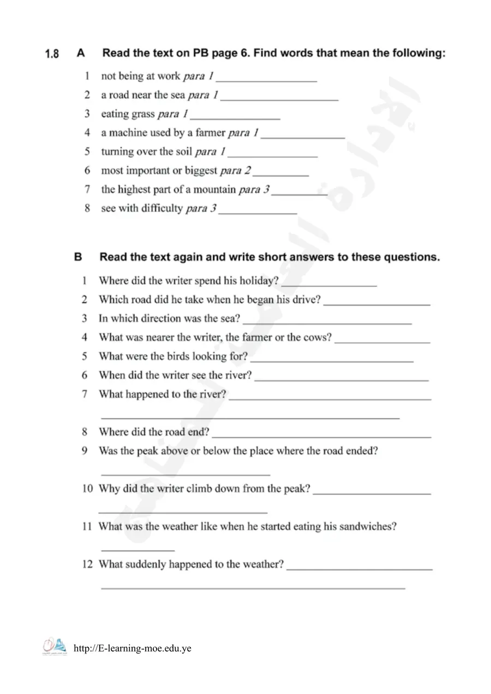

1.8 A Read the text on PB page 6. Find words that mean the following: 1 not being at work para 1 ______ 2 a road near the sea para 1 ______ 3 eating grass para 1 ______ 4 a machine used by a farmer para 1 ______ 5 turning over the soil para 1 ______ 6 most important or biggest para 2 ______ 7 the highest part of a mountain para 3 ______ 8 see with difficulty para 3 ______
B Read the text again and write short answers to these questions. 1 Where did the writer spend his holiday? 2 Which road did he take when he began his drive? 3 In which direction was the sea? 4 What was nearer the writer, the farmer or the cows? 5 What were the birds looking for? 6 When did the writer see the river? 7 What happened to the river? 8 Where did the road end? 9 Was the peak above or below the place where the road ended? 10 Why did the writer climb down from the peak? 11 What was the weather like when he started eating his sandwiches? 12 What suddenly happened to the weather?
1.9 A drive in the countryside (Reference text from PB page 6) Last year, I spent my holiday in Wales, where the scenery is wonderful. One bright, sunny day I decided to go for a drive. I drove out of town along the coast road. The sea was to my left about two kilometres away. Between the sea and the road was farmland. In one field there were a lot of cows with their heads down, grazing. In another field, closer to me, a farmer on a tractor was ploughing. Behind the plough were lots of birds, looking for something to eat in the newly turned-over soil. To the right of the road were some high, rocky hills. I turned off the main coast road and soon I was in a deep valley. Hills rose on both sides of the road. At first, the road climbed gently, but as I drove higher, it got steeper and steeper. Further up I could see a river to the left. I drove higher and higher and the river got narrower and narrower, until it was just a stream. Near the top of the hill, the road ended. I got out of the car and climbed to the peak to take in the view of the valley below. At the end of the valley I could see the farmer on his tractor. Away in the distance I could just make out the sea. As I looked, I began to feel hungry and thirsty. I went back down to the stream below. The water was cold and clear and tasted very good. I sat on a rock to eat my sandwiches, my back warmed by the sun. Suddenly a cloud came across the sun. I felt cold. A mist came down over the mountain. Soon I would not be able to see where I was going. I knew I had to leave. I put away a half-eaten sandwich, got into the car and drove back down the valley.
the view في الفقرة 3 (مُرجّح take in أو look at وسُجّل في REVIEW_NEEDED.md للتحقق من النسخة الورقية).[
{
"num": 1,
"prompt": "1 not being at work (para 1): ______",
"answers": [
"holiday"
]
},
{
"num": 2,
"prompt": "2 a road near the sea (para 1): ______",
"answers": [
"coast road"
]
},
{
"num": 3,
"prompt": "3 eating grass (para 1): ______",
"answers": [
"grazing"
]
},
{
"num": 4,
"prompt": "4 a machine used by a farmer (para 1): ______",
"answers": [
"tractor"
]
},
{
"num": 5,
"prompt": "5 turning over the soil (para 1): ______",
"answers": [
"ploughing"
]
},
{
"num": 6,
"prompt": "6 most important or biggest (para 2): ______",
"answers": [
"main"
]
},
{
"num": 7,
"prompt": "7 the highest part of a mountain (para 3): ______",
"answers": [
"peak"
]
},
{
"num": 8,
"prompt": "8 see with difficulty (para 3): ______",
"answers": [
"make out"
]
}
][
{
"num": 1,
"question": "Where did the writer spend his holiday?",
"model_answer": "In Wales.",
"explain_ar": "الجملة 1 في الفقرة 1: Last year, I spent my holiday in Wales."
},
{
"num": 2,
"question": "Which road did he take when he began his drive?",
"model_answer": "The coast road.",
"explain_ar": "الفقرة 1: I drove out of town along the coast road."
},
{
"num": 3,
"question": "In which direction was the sea?",
"model_answer": "To his left.",
"explain_ar": "الفقرة 1: The sea was to my left about two kilometres away."
},
{
"num": 4,
"question": "What was nearer the writer, the farmer or the cows?",
"model_answer": "The farmer (on his tractor).",
"explain_ar": "الفقرة 1: In another field, closer to me, a farmer on a tractor was ploughing."
},
{
"num": 5,
"question": "What were the birds looking for?",
"model_answer": "Something to eat (in the newly turned-over soil).",
"explain_ar": "آخر جملة في الفقرة 1."
},
{
"num": 6,
"question": "When did the writer see the river?",
"model_answer": "Further up the valley (as he drove higher).",
"explain_ar": "الفقرة 2: Further up I could see a river to the left."
},
{
"num": 7,
"question": "What happened to the river?",
"model_answer": "It got narrower and narrower, until it was just a stream.",
"explain_ar": "آخر جملة في الفقرة 2."
},
{
"num": 8,
"question": "Where did the road end?",
"model_answer": "Near the top of the hill.",
"explain_ar": "أول جملة في الفقرة 3."
},
{
"num": 9,
"question": "Was the peak above or below the place where the road ended?",
"model_answer": "Above.",
"explain_ar": "لأنه نزل من السيارة وتسلّق (climbed to the peak) أي أن القمة أعلى."
},
{
"num": 10,
"question": "Why did the writer climb down from the peak?",
"model_answer": "Because he began to feel hungry and thirsty.",
"explain_ar": "الفقرة 3: As I looked, I began to feel hungry and thirsty. ثم عاد أدراجه للجدول."
},
{
"num": 11,
"question": "What was the weather like when he started eating his sandwiches?",
"model_answer": "Sunny and warm (his back was warmed by the sun).",
"explain_ar": "الفقرة 4: I sat on a rock to eat my sandwiches, my back warmed by the sun."
},
{
"num": 12,
"question": "What suddenly happened to the weather?",
"model_answer": "A cloud came across the sun, he felt cold, and a mist came down over the mountain.",
"explain_ar": "الفقرة 4: Suddenly a cloud came across the sun. I felt cold. A mist came down over the mountain."
}
]{
"pb_text_vs_image": "طُوبق النص المستشهد به من PB ص 6 (صفحة ممسوحة ضوئياً في PDF) عبر شرائح 600 DPI؛ الكلمات واضحة باستثناء موضع صغير خلف ظل ورقة شجر في الفقرة 3 (take in / look at the view) الذي سُجّل في REVIEW_NEEDED.md.",
"wb_ocr_vs_image": "قُورنت صفحة WB ص 8 مع tesseract.js eng: أخرجت OCR رقم 'para /' بدلاً من 'para 1' في البنود 1–5 (بسبب الخط المائل)، وصُحّحت بصرياً من شرائح 250 DPI."
}